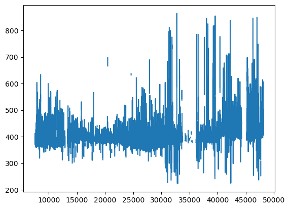
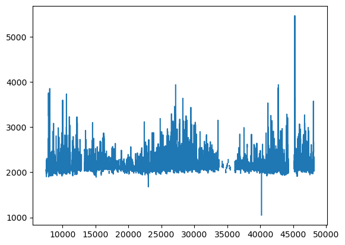
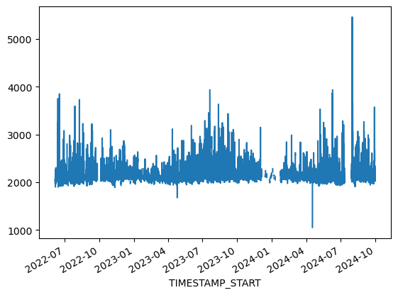
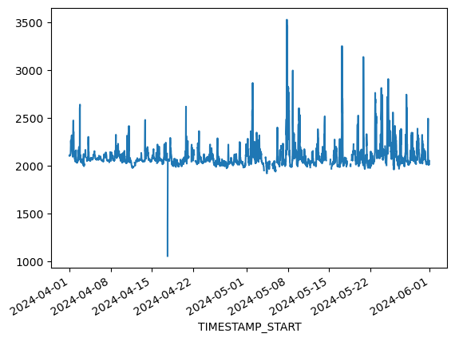

4.1 Datetimes#
Lesson Content
Dates
Datetimes
Timedeltas
Context#
Dates and times are a common part of working with scientific data. They are very common fields. While dates and times are commonly represented as strings, you can also represent them using Python-specific objects that come with added functionality specific to dates and times.
Python library datetime#
The datetime library has three major components:
date()- for handling a date (Ex. 2021-06-28)datetime()- for handling a specific time of a particular date (Ex. 2021-06-28 at 12:31pm)timedelta()- for handling a length of time (Ex. 1 hour, 2 weeks, 3.5 years)
Dates#
from datetime import date
date(2017, 6, 30)
datetime.date(2017, 6, 30)
# assigning a date to a variable
birthday = date(2019, 9, 12)
Why bother?#
The dates are nice, but why put in the effort? Your data by default probably uses a string, for example 2016-06-30, so why not stick with that?
Reason 1#
If Python knows it’s a date it can help you find errors.
date(2017, 6, 31)
---------------------------------------------------------------------------
ValueError Traceback (most recent call last)
Cell In[4], line 1
----> 1 date(2017, 6, 31)
ValueError: day is out of range for month
# Feb 29 exists during a leap year
date(2012, 2, 29)
datetime.date(2012, 2, 29)
# But not during other years!
date(2011, 2, 29)
---------------------------------------------------------------------------
ValueError Traceback (most recent call last)
Cell In[6], line 2
1 # But not during other years!
----> 2 date(2011, 2, 29)
ValueError: day is out of range for month
Reason 2#
Added organization through quick accessing of elements.
We’ll talk about this more below.
Accessing parts of a date#
Once you have a date created you can easily pull out the piece you want.
campaign_start = date(2011, 5, 15)
campaign_start.month
5
# Monday is 0 and Sunday is 6
campaign_start.weekday()
6
📝 Check your understanding
Create a date object that represents your birthday.
Using dates() with other objects#
You can do what you want with these objects, such as putting them in lists or dictionaries.
holidays = [date(2021, 1, 1), date(2021, 1, 18), date(2021, 11, 25)]
holidays_dict = {
'New Years Day': date(2021, 1, 1),
'MLK Day': date(2021, 1, 18),
'Thanksgiving': date(2021, 11, 25),
}
holidays_dict['Thanksgiving']
datetime.date(2021, 11, 25)
A comment on calendars#
Turns out there are actually lots of different calendars that can be used to track time. The one you are most likely familiar with is the Gregorian calendar (using years, months, and days). Another common one that you will use is a Julian calendar, which starts on January 1st and counts the days one by one.
If you use model data you will also find more types of calendars, such as 365_day (just ignores leap days) or 360_day (every month has 30 days).

📝 Check your understanding
holidays_dict = {
'New Years Day': date(2021, 1, 1),
'MLK Day': date(2021, 1, 18),
'Thanksgiving': date(2021, 11, 25),
}
What is the output of holidays_dict['MLK Day'].day?
Datetimes#
Creating datetime() objects manually#
from datetime import datetime
# Created just like `date` objects
datetime(2021, 9, 21, 13, 45, 0)
datetime.datetime(2021, 9, 21, 13, 45)
We have the same ability as with date()s to access the different parts of the datetime object. One place this could come in handy is if we need to narrow down our data by some aspect of the date.
example = datetime(2021, 9, 21, 13, 45, 0)
if example.hour >= 12 and example.hour <= 18:
print('sample taken in the afternoon')
sample taken in the afternoon
A comment on timezones#
The datetime library also has the ability to keep track and convert timezones. Timezones can cause a lot of chaos in the data world. We aren’t going to talk about them in depth but know that if you need to track timezones for whatever reason datetime can handle that.
Creating date()s and datetime()s from strings#
Thus far we have created our time objects by inputing the integer number of the year, month, etc. Much more commonly, though, you aren’t creating them from scratch, you are creating them from a string. For that we have strptime and strftime.
Syntax |
Description |
|---|---|
|
Convert from string to datetime |
|
Convert from datetime to string |
All of the following strings can be converted programatically into datetime objects:
'2019-01-29''01-31-88''September 12 7:00PM''Apr 11 2001 13:00:00''210 9:00'And so many other combinations
The key part of converting from string to datetime and vice versa is that we need to tell the computer what is supposed to be looking for in the string. For that we have labels, or directives, such as %Y or %d. The place to consult for format strings is strftime.org.
Some Examples#
Example 1#
date_string = '2019-01-29'
Example 2#
date_string = 'Apr 11 2001 13:00:00'
Example 3#
Switching date formats
start_date_string = '2016234'
# Goal: '2016-08-21 00:00:00'
📝 Check your understanding
What is the format string corresponding to the following datetime string?
'8/30/2019 22:13:00', which shows the date August 30th 2019 at 10:13PM (military time).
timedelta() objects#
While date()sand datetime()s represent a specific moment in time, timedelta()s represent a length of time, for example, one week, two hours, or 15 seconds. They aren’t connected to any particular moment, they just represent a set length of time.
from datetime import timedelta
# Representing 3 days
timedelta(days=3)
datetime.timedelta(days=3)
date.today() + timedelta(days=3)
datetime.date(2025, 6, 6)
# Negatives also work
date.today() + timedelta(days=-3)
datetime.date(2025, 5, 31)
When we combine timedelta()s and datetime()s what we get is the ability to really quickly determine how long there is between two things.
# Combine lengths of time
datetime.now() + timedelta(days=3, hours=1)
datetime.datetime(2025, 6, 6, 19, 50, 33, 572873)
# If you want to find the difference between two lengths of time
date.today() - date(2021, 11, 25)
datetime.timedelta(days=1286)
📝 Check your understanding
How many days are there between today and Thanksgiving of this year (November 25th 2022)?
Code Summary#
from datetime import datetime, date, timedelta
# Creating a single date
independence_day = date(2022, 7, 4)
# Creating a single datetime
flight_start = datetime(2021, 12, 17, 9, 28, 00)
# Inspecting dates/datetimes
print('independence day was on the day of week :', independence_day.weekday()) # 0 is Monday
print('flight month:', flight_start.month)
# Parsing strings
date_string = '2019-01-29'
dt = datetime.strptime(date_string, '%Y-%m-%d')
print("I'm a datetime object:", dt)
# Timedeltas
timedelta(days=7)
print('one week from today will be:', datetime.today()+timedelta(days=7))
print('this year started ', datetime.today() - datetime(2022, 1, 1), 'ago')
independence day was on the day of week : 0
flight month: 12
I'm a datetime object: 2019-01-29 00:00:00
one week from today will be: 2025-06-10 18:50:33.587785
this year started 1249 days, 18:50:33.587855 ago
Datetimes and pandas#
Datetimes really become powerful when you use them with the pandas library. Let’s see an example of this in action with a dataset.
The dataset being using is Fluxtower data from the VCU Rice Rivers Center Fluxtower. The data can be accessed here (https://ameriflux.lbl.gov/sites/siteinfo/US-RRC).
First let’s open the dataset with pandas
import pandas as pd
fluxtower = pd.read_csv('data/AMF_US-RRC_BASE_HH_2-5.csv', skiprows=2)
As always, let’s check off our data exploration steps:
What variables are available in this dataset?
How is the dataset organized? What is the size?
Do there appear to be any nodata values in this dataset?
Do the variables appear to have reasonable values?
Make a simple plot of 1-2 variables
fluxtower
| TIMESTAMP_START | TIMESTAMP_END | CH4 | CO2 | FC | FCH4 | H | H2O | MO_LENGTH | LE | ... | WTD_1_1_1 | WTD_2_1_1 | WTD_PI_1 | P_1_1_1 | TS_PI_1 | SW_IN_1_1_1 | SWC_PI_1 | NETRAD_1_1_1 | PPFD_IN_1_1_1 | RH_1_1_1 | |
|---|---|---|---|---|---|---|---|---|---|---|---|---|---|---|---|---|---|---|---|---|---|
| 0 | 202201010000 | 202201010030 | -9999.00 | -9999.000 | -9999.00000 | -9999.000 | -9999.0000 | -9999.0000 | -9999.00000 | -9999.000 | ... | -9999.0 | -9999.0 | -9999.0 | -9999.0 | -9999.000000 | -9999.000 | -9999.000000 | -9999.000 | -9999.000 | -9999.0000 |
| 1 | 202201010030 | 202201010100 | -9999.00 | -9999.000 | -9999.00000 | -9999.000 | -9999.0000 | -9999.0000 | -9999.00000 | -9999.000 | ... | -9999.0 | -9999.0 | -9999.0 | -9999.0 | -9999.000000 | -9999.000 | -9999.000000 | -9999.000 | -9999.000 | -9999.0000 |
| 2 | 202201010100 | 202201010130 | -9999.00 | -9999.000 | -9999.00000 | -9999.000 | -9999.0000 | -9999.0000 | -9999.00000 | -9999.000 | ... | -9999.0 | -9999.0 | -9999.0 | -9999.0 | -9999.000000 | -9999.000 | -9999.000000 | -9999.000 | -9999.000 | -9999.0000 |
| 3 | 202201010130 | 202201010200 | -9999.00 | -9999.000 | -9999.00000 | -9999.000 | -9999.0000 | -9999.0000 | -9999.00000 | -9999.000 | ... | -9999.0 | -9999.0 | -9999.0 | -9999.0 | -9999.000000 | -9999.000 | -9999.000000 | -9999.000 | -9999.000 | -9999.0000 |
| 4 | 202201010200 | 202201010230 | -9999.00 | -9999.000 | -9999.00000 | -9999.000 | -9999.0000 | -9999.0000 | -9999.00000 | -9999.000 | ... | -9999.0 | -9999.0 | -9999.0 | -9999.0 | -9999.000000 | -9999.000 | -9999.000000 | -9999.000 | -9999.000 | -9999.0000 |
| ... | ... | ... | ... | ... | ... | ... | ... | ... | ... | ... | ... | ... | ... | ... | ... | ... | ... | ... | ... | ... | ... |
| 48160 | 202409300800 | 202409300830 | 2067.19 | 418.459 | 9.46510 | 356.292 | 24.2034 | 24.8700 | -29.67980 | 102.541 | ... | -9999.0 | -9999.0 | -9999.0 | 0.0 | 23.833333 | 160.333 | 63.686100 | 140.627 | 333.144 | 90.2877 |
| 48161 | 202409300830 | 202409300900 | 2038.25 | 412.303 | 16.13130 | 356.068 | 28.4025 | 24.9232 | -7.58720 | 177.711 | ... | -9999.0 | -9999.0 | -9999.0 | 0.0 | 23.833333 | 209.732 | 63.668233 | 188.558 | 429.674 | 86.9003 |
| 48162 | 202409300900 | 202409300930 | 2036.33 | 409.203 | 9.18739 | 326.943 | 28.0833 | 24.8638 | -9.40072 | 198.703 | ... | -9999.0 | -9999.0 | -9999.0 | 0.0 | 23.833333 | 222.259 | 63.668900 | 206.376 | 466.699 | 84.2807 |
| 48163 | 202409300930 | 202409301000 | 2051.15 | 410.137 | 15.29660 | 217.778 | 10.3241 | 25.2031 | -286.52500 | 196.958 | ... | -9999.0 | -9999.0 | -9999.0 | 0.0 | 23.833333 | 150.553 | 63.678133 | 141.378 | 315.578 | 85.5835 |
| 48164 | 202409301000 | 202409301030 | 2027.36 | 406.491 | 5.60120 | 250.384 | 28.6555 | 24.7473 | -26.58540 | 177.568 | ... | -9999.0 | -9999.0 | -9999.0 | 0.0 | 23.833333 | 205.257 | 63.730200 | 194.894 | 430.722 | 81.5069 |
48165 rows × 36 columns
# Look reasonable
fluxtower.max()
TIMESTAMP_START 2.024093e+11
TIMESTAMP_END 2.024093e+11
CH4 5.462830e+03
CO2 8.641900e+02
FC 9.991520e+01
FCH4 4.084780e+03
H 7.580980e+02
H2O 5.608880e+01
MO_LENGTH 1.204900e+05
LE 1.492360e+03
NEE_PI 1.074680e+02
PA_1_1_1 1.044650e+02
SC 5.732620e+01
SCH4 1.812200e+02
SH 4.857090e+01
SLE 1.583230e+02
TA_1_1_1 3.990200e+01
TAU 6.284980e-01
U_SIGMA 3.133840e+00
USTAR 1.213490e+00
V_SIGMA 3.179340e+00
VPD_PI_1_1_1 5.056000e+01
W_SIGMA 1.598771e+00
WD_1_1_1 3.600000e+02
WS_1_1_1 7.165060e+00
ZL 2.558450e+02
WTD_1_1_1 7.324040e-01
WTD_2_1_1 2.526000e+00
WTD_PI_1 1.628288e+00
P_1_1_1 2.090000e+01
TS_PI_1 2.836667e+01
SW_IN_1_1_1 1.028760e+03
SWC_PI_1 7.217110e+01
NETRAD_1_1_1 8.132100e+02
PPFD_IN_1_1_1 1.979500e+03
RH_1_1_1 1.000000e+02
dtype: float64
Looks like we have nans…
import numpy as np
fluxtower = fluxtower.replace(-9999, np.nan)
fluxtower.head()
| TIMESTAMP_START | TIMESTAMP_END | CH4 | CO2 | FC | FCH4 | H | H2O | MO_LENGTH | LE | ... | WTD_1_1_1 | WTD_2_1_1 | WTD_PI_1 | P_1_1_1 | TS_PI_1 | SW_IN_1_1_1 | SWC_PI_1 | NETRAD_1_1_1 | PPFD_IN_1_1_1 | RH_1_1_1 | |
|---|---|---|---|---|---|---|---|---|---|---|---|---|---|---|---|---|---|---|---|---|---|
| 0 | 202201010000 | 202201010030 | NaN | NaN | NaN | NaN | NaN | NaN | NaN | NaN | ... | NaN | NaN | NaN | NaN | NaN | NaN | NaN | NaN | NaN | NaN |
| 1 | 202201010030 | 202201010100 | NaN | NaN | NaN | NaN | NaN | NaN | NaN | NaN | ... | NaN | NaN | NaN | NaN | NaN | NaN | NaN | NaN | NaN | NaN |
| 2 | 202201010100 | 202201010130 | NaN | NaN | NaN | NaN | NaN | NaN | NaN | NaN | ... | NaN | NaN | NaN | NaN | NaN | NaN | NaN | NaN | NaN | NaN |
| 3 | 202201010130 | 202201010200 | NaN | NaN | NaN | NaN | NaN | NaN | NaN | NaN | ... | NaN | NaN | NaN | NaN | NaN | NaN | NaN | NaN | NaN | NaN |
| 4 | 202201010200 | 202201010230 | NaN | NaN | NaN | NaN | NaN | NaN | NaN | NaN | ... | NaN | NaN | NaN | NaN | NaN | NaN | NaN | NaN | NaN | NaN |
5 rows × 36 columns
fluxtower['CO2'].plot()
<Axes: >

Great. Our initial exploration showed us that this dataset is organized by time. It is a timeseries of carbon dioxide and methane, as well as related measurements.
Converting a column to datetime#
One of the built-in datetime features of pandas is pd.to_datetime() This is a function that can be used on a column of data to convert the column from a string to a datetime. It takes the argument format, which uses the same % symbology discussed above to convert the string.
pd.to_datetime(fluxtower['TIMESTAMP_START'], format='%Y%m%d%H%M%S')
0 2022-01-01 00:00:00
1 2022-01-01 00:03:00
2 2022-01-01 01:00:00
3 2022-01-01 01:03:00
4 2022-01-01 02:00:00
...
48160 2024-09-30 08:00:00
48161 2024-09-30 08:03:00
48162 2024-09-30 09:00:00
48163 2024-09-30 09:03:00
48164 2024-09-30 10:00:00
Name: TIMESTAMP_START, Length: 48165, dtype: datetime64[ns]
Looks good! Let’s do it to both the start time and stop time columns.
fluxtower['TIMESTAMP_START'] = pd.to_datetime(
fluxtower['TIMESTAMP_START'], format='%Y%m%d%H%M%S')
fluxtower['TIMESTAMP_END'] = pd.to_datetime(
fluxtower['TIMESTAMP_END'], format='%Y%m%d%H%M%S')
What has been gained? Well now that the column is a datetime any of the datetime attributes discussed above can be used using the .dt. accessor.
fluxtower['TIMESTAMP_START'].dt.hour
0 0
1 0
2 1
3 1
4 2
..
48160 8
48161 8
48162 9
48163 9
48164 10
Name: TIMESTAMP_START, Length: 48165, dtype: int32
fluxtower['TIMESTAMP_START'].dt.year
0 2022
1 2022
2 2022
3 2022
4 2022
...
48160 2024
48161 2024
48162 2024
48163 2024
48164 2024
Name: TIMESTAMP_START, Length: 48165, dtype: int32
We could, for example, create a new column called “hour” on the end of our dataframe and use it to filter our data:
fluxtower['HOUR'] = fluxtower['TIMESTAMP_START'].dt.hour
fluxtower[fluxtower['HOUR'] == 8]
| TIMESTAMP_START | TIMESTAMP_END | CH4 | CO2 | FC | FCH4 | H | H2O | MO_LENGTH | LE | ... | WTD_2_1_1 | WTD_PI_1 | P_1_1_1 | TS_PI_1 | SW_IN_1_1_1 | SWC_PI_1 | NETRAD_1_1_1 | PPFD_IN_1_1_1 | RH_1_1_1 | HOUR | |
|---|---|---|---|---|---|---|---|---|---|---|---|---|---|---|---|---|---|---|---|---|---|
| 16 | 2022-01-01 08:00:00 | 2022-01-01 08:03:00 | NaN | NaN | NaN | NaN | NaN | NaN | NaN | NaN | ... | NaN | NaN | NaN | NaN | NaN | NaN | NaN | NaN | NaN | 8 |
| 17 | 2022-01-01 08:03:00 | 2022-01-01 09:00:00 | NaN | NaN | NaN | NaN | NaN | NaN | NaN | NaN | ... | NaN | NaN | NaN | NaN | NaN | NaN | NaN | NaN | NaN | 8 |
| 64 | 2022-01-02 08:00:00 | 2022-01-02 08:03:00 | NaN | NaN | NaN | NaN | NaN | NaN | NaN | NaN | ... | NaN | NaN | NaN | NaN | NaN | NaN | NaN | NaN | NaN | 8 |
| 65 | 2022-01-02 08:03:00 | 2022-01-02 09:00:00 | NaN | NaN | NaN | NaN | NaN | NaN | NaN | NaN | ... | NaN | NaN | NaN | NaN | NaN | NaN | NaN | NaN | NaN | 8 |
| 112 | 2022-01-03 08:00:00 | 2022-01-03 08:03:00 | NaN | NaN | NaN | NaN | NaN | NaN | NaN | NaN | ... | NaN | NaN | NaN | NaN | NaN | NaN | NaN | NaN | NaN | 8 |
| ... | ... | ... | ... | ... | ... | ... | ... | ... | ... | ... | ... | ... | ... | ... | ... | ... | ... | ... | ... | ... | ... |
| 48065 | 2024-09-28 08:03:00 | 2024-09-28 09:00:00 | NaN | NaN | NaN | NaN | NaN | NaN | NaN | NaN | ... | NaN | NaN | NaN | NaN | NaN | NaN | NaN | NaN | NaN | 8 |
| 48112 | 2024-09-29 08:00:00 | 2024-09-29 08:03:00 | 2465.15 | 509.790 | -12.3026 | 74.8341 | 34.3559 | 23.9035 | -1.42501 | 57.5317 | ... | NaN | NaN | 0.0 | 23.434433 | 264.278 | 63.661100 | 268.164 | 504.793 | 88.1168 | 8 |
| 48113 | 2024-09-29 08:03:00 | 2024-09-29 09:00:00 | NaN | 479.043 | 28.6803 | NaN | 17.4133 | 24.3529 | -26.57900 | 139.8090 | ... | NaN | NaN | 0.0 | 23.433133 | 287.864 | 63.659833 | 325.333 | 576.607 | 83.7310 | 8 |
| 48160 | 2024-09-30 08:00:00 | 2024-09-30 08:03:00 | 2067.19 | 418.459 | 9.4651 | 356.2920 | 24.2034 | 24.8700 | -29.67980 | 102.5410 | ... | NaN | NaN | 0.0 | 23.833333 | 160.333 | 63.686100 | 140.627 | 333.144 | 90.2877 | 8 |
| 48161 | 2024-09-30 08:03:00 | 2024-09-30 09:00:00 | 2038.25 | 412.303 | 16.1313 | 356.0680 | 28.4025 | 24.9232 | -7.58720 | 177.7110 | ... | NaN | NaN | 0.0 | 23.833333 | 209.732 | 63.668233 | 188.558 | 429.674 | 86.9003 | 8 |
2008 rows × 37 columns
fluxtower[fluxtower['HOUR'] == 8].max()
TIMESTAMP_START 2024-09-30 08:03:00
TIMESTAMP_END 2024-09-30 09:00:00
CH4 3097.25
CO2 652.861
FC 89.4748
FCH4 817.538025
H 313.200012
H2O 48.667099
MO_LENGTH 28601.5
LE 738.005
NEE_PI 62.463989
PA_1_1_1 103.931
SC 21.2654
SCH4 48.9216
SH 48.2234
SLE 120.165001
TA_1_1_1 34.80999
TAU 0.305833
U_SIGMA 2.32484
USTAR 0.823563
V_SIGMA 2.09051
VPD_PI_1_1_1 38.4991
W_SIGMA 1.198132
WD_1_1_1 359.869995
WS_1_1_1 4.5501
ZL 102.229
WTD_1_1_1 0.507
WTD_2_1_1 1.136
WTD_PI_1 0.723128
P_1_1_1 5.3
TS_PI_1 26.864433
SW_IN_1_1_1 686.893
SWC_PI_1 71.7314
NETRAD_1_1_1 551.052
PPFD_IN_1_1_1 1364.95
RH_1_1_1 100.0
HOUR 8
dtype: object
Plotting with a datetime index#
Let’s go back and look at the inital exploratory plot we made.
fluxtower['CH4'].plot()
<Axes: >

It gives us a introductory sense of the data, but it isn’t good for much else beyond that. Look at the x axis – it’s pretty hard to read the axis when it only shows the index number of the observation.
To improve this we can set the datetime column as the index of the dataframe.
fluxtower = fluxtower.set_index('TIMESTAMP_START')
fluxtower['CH4'].plot()
<Axes: xlabel='TIMESTAMP_START'>

Much prettier! But what else happened here? Because the index is now a datetime we can filter our rows based on the value of the index. For example, we could select just the rows that are from April 2024:
fluxtower.loc['2024-04']
| TIMESTAMP_END | CH4 | CO2 | FC | FCH4 | H | H2O | MO_LENGTH | LE | NEE_PI | ... | WTD_2_1_1 | WTD_PI_1 | P_1_1_1 | TS_PI_1 | SW_IN_1_1_1 | SWC_PI_1 | NETRAD_1_1_1 | PPFD_IN_1_1_1 | RH_1_1_1 | HOUR | |
|---|---|---|---|---|---|---|---|---|---|---|---|---|---|---|---|---|---|---|---|---|---|
| TIMESTAMP_START | |||||||||||||||||||||
| 2024-04-01 00:00:00 | 2024-04-01 00:03:00 | 2108.81 | 398.007 | 1.63353 | -0.559371 | 0.307182 | 12.7055 | -76.91220 | 2.636220 | NaN | ... | NaN | NaN | 0.0 | 13.838133 | 0.02380 | 69.462000 | -48.3378 | 0.0331 | 99.9216 | 0 |
| 2024-04-01 00:03:00 | 2024-04-01 01:00:00 | 2102.48 | 327.227 | -2.75409 | -0.294715 | 0.487397 | 12.5017 | -11.06080 | -0.951638 | NaN | ... | NaN | NaN | 0.0 | 13.756567 | 0.01460 | 69.473233 | -49.3596 | 0.0318 | 99.9213 | 0 |
| 2024-04-01 01:00:00 | 2024-04-01 01:03:00 | 2107.51 | NaN | NaN | 3.846890 | -0.813930 | 12.2420 | 1.78308 | 45.052700 | NaN | ... | NaN | NaN | 0.0 | 13.745267 | 0.02910 | 69.521767 | -49.5621 | 0.0583 | 99.9229 | 1 |
| 2024-04-01 01:03:00 | 2024-04-01 02:00:00 | 2111.53 | NaN | NaN | 1.712460 | -0.351375 | NaN | 1.81799 | NaN | NaN | ... | NaN | NaN | 0.0 | 13.707967 | 0.00993 | 69.556500 | -48.5002 | 0.0543 | 99.9192 | 1 |
| 2024-04-01 02:00:00 | 2024-04-01 02:03:00 | 2112.83 | NaN | NaN | 0.907613 | -0.292000 | NaN | 2.49570 | NaN | NaN | ... | NaN | NaN | 0.0 | 13.666667 | 0.02580 | 69.562933 | -48.3756 | 0.0331 | 99.9163 | 2 |
| ... | ... | ... | ... | ... | ... | ... | ... | ... | ... | ... | ... | ... | ... | ... | ... | ... | ... | ... | ... | ... | ... |
| 2024-04-30 21:03:00 | 2024-04-30 22:00:00 | 2102.52 | 416.857 | 2.83834 | 91.020300 | -9.741900 | 17.4378 | 15.39640 | 4.431730 | NaN | ... | NaN | NaN | NaN | NaN | NaN | NaN | NaN | NaN | 63.9750 | 21 |
| 2024-04-30 22:00:00 | 2024-04-30 22:03:00 | 2138.06 | 416.853 | 7.65920 | 319.814000 | -25.919600 | 17.4775 | 13.83080 | 10.920200 | NaN | ... | NaN | NaN | NaN | NaN | NaN | NaN | NaN | NaN | 64.7523 | 22 |
| 2024-04-30 22:03:00 | 2024-04-30 23:00:00 | 2227.43 | 422.285 | 2.18512 | 32.818900 | -6.781700 | 17.7636 | 21.53610 | -2.685270 | NaN | ... | NaN | NaN | NaN | NaN | NaN | NaN | NaN | NaN | 68.8005 | 22 |
| 2024-04-30 23:00:00 | 2024-04-30 23:03:00 | 2140.87 | 418.442 | 8.05418 | 242.906000 | -22.691000 | 17.6689 | 15.47110 | 7.244200 | NaN | ... | NaN | NaN | NaN | NaN | NaN | NaN | NaN | NaN | 68.8640 | 23 |
| 2024-04-30 23:03:00 | 2024-05-01 00:00:00 | 2201.39 | 419.923 | 6.74235 | 271.382000 | -19.294400 | 17.6370 | 13.77530 | 8.294810 | NaN | ... | NaN | NaN | NaN | NaN | NaN | NaN | NaN | NaN | 69.1121 | 23 |
1440 rows × 36 columns
Or that are between April and June of 2024:
fluxtower.loc['2024-04':'2024-06']
| TIMESTAMP_END | CH4 | CO2 | FC | FCH4 | H | H2O | MO_LENGTH | LE | NEE_PI | ... | WTD_2_1_1 | WTD_PI_1 | P_1_1_1 | TS_PI_1 | SW_IN_1_1_1 | SWC_PI_1 | NETRAD_1_1_1 | PPFD_IN_1_1_1 | RH_1_1_1 | HOUR | |
|---|---|---|---|---|---|---|---|---|---|---|---|---|---|---|---|---|---|---|---|---|---|
| TIMESTAMP_START | |||||||||||||||||||||
| 2024-04-01 00:00:00 | 2024-04-01 00:03:00 | 2108.81 | 398.007 | 1.63353 | -0.559371 | 0.307182 | 12.705500 | -76.91220 | 2.636220 | NaN | ... | NaN | NaN | 0.0 | 13.838133 | 0.02380 | 69.462000 | -48.3378 | 0.0331 | 99.921600 | 0 |
| 2024-04-01 00:03:00 | 2024-04-01 01:00:00 | 2102.48 | 327.227 | -2.75409 | -0.294715 | 0.487397 | 12.501700 | -11.06080 | -0.951638 | NaN | ... | NaN | NaN | 0.0 | 13.756567 | 0.01460 | 69.473233 | -49.3596 | 0.0318 | 99.921300 | 0 |
| 2024-04-01 01:00:00 | 2024-04-01 01:03:00 | 2107.51 | NaN | NaN | 3.846890 | -0.813930 | 12.242000 | 1.78308 | 45.052700 | NaN | ... | NaN | NaN | 0.0 | 13.745267 | 0.02910 | 69.521767 | -49.5621 | 0.0583 | 99.922900 | 1 |
| 2024-04-01 01:03:00 | 2024-04-01 02:00:00 | 2111.53 | NaN | NaN | 1.712460 | -0.351375 | NaN | 1.81799 | NaN | NaN | ... | NaN | NaN | 0.0 | 13.707967 | 0.00993 | 69.556500 | -48.5002 | 0.0543 | 99.919200 | 1 |
| 2024-04-01 02:00:00 | 2024-04-01 02:03:00 | 2112.83 | NaN | NaN | 0.907613 | -0.292000 | NaN | 2.49570 | NaN | NaN | ... | NaN | NaN | 0.0 | 13.666667 | 0.02580 | 69.562933 | -48.3756 | 0.0331 | 99.916300 | 2 |
| ... | ... | ... | ... | ... | ... | ... | ... | ... | ... | ... | ... | ... | ... | ... | ... | ... | ... | ... | ... | ... | ... |
| 2024-06-30 21:03:00 | 2024-06-30 22:00:00 | 2087.51 | 538.236 | 6.28854 | 225.262000 | -15.898500 | 15.236500 | 49.49850 | 30.307400 | NaN | ... | NaN | NaN | 0.0 | 26.966400 | -0.00331 | 65.600000 | -23.9861 | 0.0225 | 47.398100 | 21 |
| 2024-06-30 22:00:00 | 2024-06-30 22:03:00 | NaN | 511.231 | 8.76385 | NaN | -6.314760 | 32.504000 | 61.65950 | -35.848400 | NaN | ... | NaN | NaN | 0.0 | 26.910267 | -0.00530 | 65.572967 | -23.5895 | 0.0755 | 98.673300 | 22 |
| 2024-06-30 22:03:00 | 2024-06-30 23:00:00 | NaN | 496.436 | -29.15830 | NaN | -7.415390 | 26.118000 | 70.75380 | 235.468000 | NaN | ... | NaN | NaN | 0.5 | 26.866467 | 0.01190 | 65.533333 | -19.5849 | 0.0278 | 76.991900 | 22 |
| 2024-06-30 23:00:00 | 2024-06-30 23:03:00 | 2072.32 | 536.231 | 12.65640 | 14.294000 | -1.479720 | 0.173792 | 7.34834 | 3.302110 | NaN | ... | NaN | NaN | 0.1 | 26.837033 | 0.01190 | 65.529900 | -12.6181 | 0.0596 | 0.549116 | 23 |
| 2024-06-30 23:03:00 | 2024-07-01 00:00:00 | NaN | 557.390 | 22.10550 | NaN | 20.428500 | 0.172807 | -28.16490 | -325.127000 | NaN | ... | NaN | NaN | 0.8 | 26.785933 | 0.00794 | 65.500367 | -12.9958 | 0.0318 | 0.457200 | 23 |
4368 rows × 36 columns
fluxtower.loc['2024-04':'2024-05']['CH4'].plot()
<Axes: xlabel='TIMESTAMP_START'>

Intermediate topics
resample